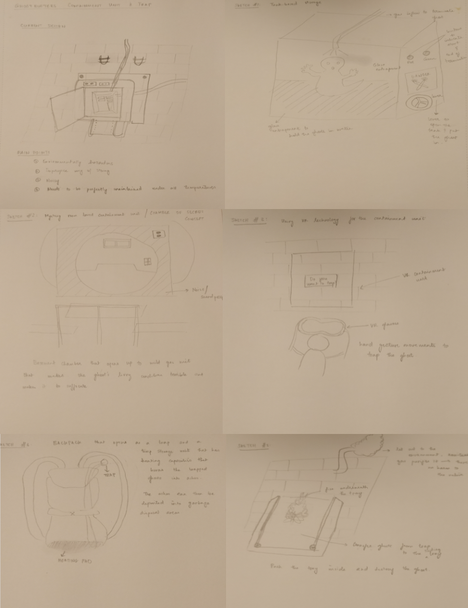
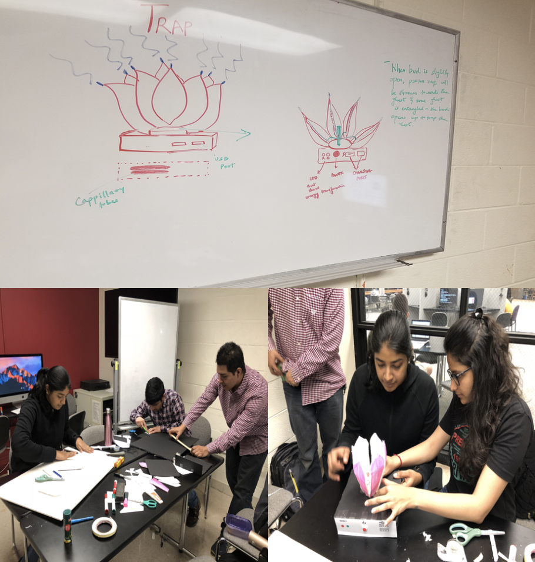
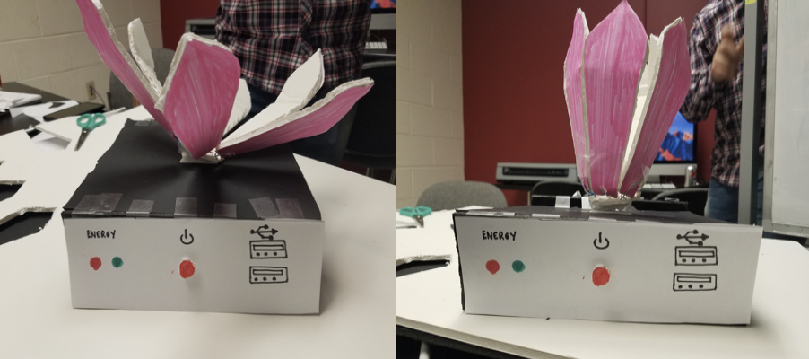
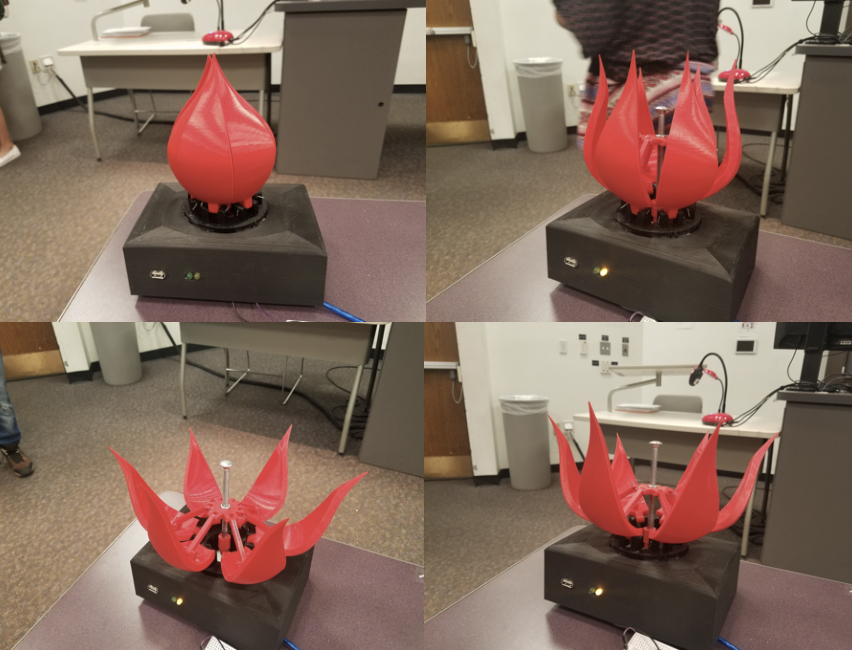
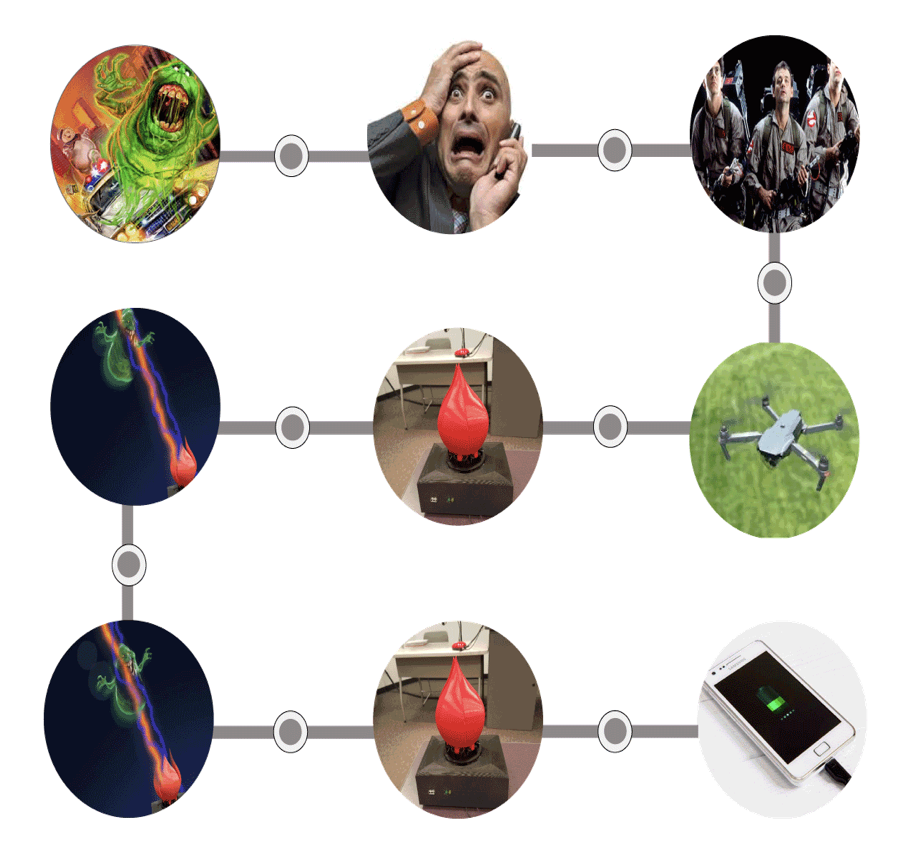

Redesigning the Ghost Trap
- Duration: Spring 2018 - Team Project
- Course: HCI Design Methods
- Tools and Methods: Brainstorming, Pen and Paper sketching, User Interviews, Lo-fidelity prototypes, Hi-fidelity prototypes, 3D printing and Arduino
Design Problem
The problem that we strive to address through this project is of the containment unit where the ghostbusters store the ghosts after trapping them. In the movie, it was shown that the containment unit caused a lot of environmental issues and the EPA intervened to have them shut down. Taking this as our major focus, we introduce a design that eliminates the concept of having a containment unit and we have also redesigned the trap to make it more useful.
User Analysis
Users and their Context
For our project, we chose the users to be the Ghostbusters themselves. The ghostbusters are a group of 4 parapsychologists who are mostly experts in particle physics. Their strong understanding of physics (especially particle physics) helps them understand the electromagnetic and radioactive phenomenon related to paranormal activities. This helps them build devices needed to tackle the metaphysical composed bodies. Apart from that, they need to have good knowledge of paranormal history to understand the origin of different kind of ghosts and how to deal with them in a manner such that it does not cause any harm to the resident or the people involved with the paranormal activity. Due to the unpredictable nature of ghost haunting and odd hours, it is required that they operate round the clock (24/7) and serve the people as and when their help is required.
User Tasks
Some of the tasks they perform include but are not limited to:
- Preparing and maintaining their gear and equipment.
- Responding to user inquiries and customers.
- Driving to multiple locations.
- Talking to and interviewing clients.
- Going after and capturing ghosts.
- Disposing ghosts in an non hazardous manner.
- Investigating the paranormal activities.
- Develop high - tech weapons to capture ghosts
Design Process
We followed a user-centered design process in our product design phase. After recognizing and realizing all the pain points of the user, a basic idea of the product design was sketched out on paper. Firstly, we decided to sketch out ways in which we can make the containment less hazardous and more appealing but then as we delve more deeply into several alternative designs, we felt that the notion of eliminating the whole concept of having to store the ghost would be a possible solution to the problem that we wanted to address.
Low Fidelity Prototypes
From the sketches that we had, the team discussed on all the possible and viable solutions that would tackle our user’s problem. Combining few ideas from the several sketches that we made, we took into account ideas that would benefit a lot for our users and finalized our design idea to be - A lotus ghost trap that captures ghosts and converts ghost energy to reusable electric energy that can be used for charging mobile devices. Based on the idea that we finalized, we designed and developed low fidelity prototypes to test them with users.
 Low fidelity prototype Evaluation
Heuristic evaluation and usability tests were conducted on the low-fidelity prototype. The key findings from the heuristic evaluation and the usability tests were -
- The system indicated its status at all times- the functionality of opening and closing of trap was indicated clearly and was visible to the user.
- The low-fidelity prototype was minimalistic and aesthetically pleasing to look at. The prototype had just the minimal required features to be able to use it efficiently in emergency situations.
- Overall, the design provides flexibility and it is unobtrusive. The ghostbusters can operate the trap remotely without any intervention with the trap.
High Fidelity Prototypes
From the feedback that we received from the usability tests and heuristic evaluation, we tried accommodating the major design challenges that we faced.
Final Design
Based on the feedback that we received on the high-fidelity prototype, we incorporated them in our final design.
The changes we made to the final design are -
- We added slots for the LED on the top view of the base for easier identification.
- Since the trap’s opening and closing movements took a lot of time, we increased the speed of the stepper motor using a powerful 9V battery.
- We have also added straps on the backside of the base so that it can be easily attached to the backpack/vest/belt and ripped off easily as well.
- To make the trap look like a ghostbusters’ prop, we added branding images and the ghostbusters logo to it.
System Flow
Firstly, in case of a ghost attack, a member of the general public contacts the ghostbuster for their service. The ghostbuster then operates the drone to the location using a remote control. The drone also carries the trap which will be dropped off at the location of the ghost attack. Using a switch in the same remote control, the trap is opened. When the trap is fully opened, it emits out proton beams that attacks the ghost and drains out the ghost. Eventually, after several minutes, the ghost is trapped into the ghost trap and the trap closes slowly but steadily. In order to conceal the ghost and not let it to escape, a protective shield available inside the trap locks the ghosts. During the closing of the trap, the ghost energy is converted to renewable energy. Once the trap is fully closed and a green LED lights up, it signifies that the trap can now act as a power source that helps the ghostbusters to charge their mobile devices.
Evaluation
An in-class evaluation of our high-fidelity prototype was conducted wherein the performance of the lotus ghost trap was assessed and through a follow-up questions/feedback, a quantitative evaluation of the prototype was assessed.
The users were asked to operate the trap by pressing on the switch and based on the demonstrations, we asked them a couple of follow-up questions with a rating scale to provide feedback for our designs.
Interpretation
Based on the evaluations that we conducted with the users, it appears that the trap is easy to carry and kind of minimalistic because of its simplistic design. But since the test was conducted on a small sample of users, the results cannot be generalized. The users loved the prototype for its efficiency and aestheticity. The users also appreciated the design for giving them proper feedback and they were able to visibly understand the status of the system. On the other hand, the users told us that the colors indicating the status of the LED are contradicting and that since the trap is fragile, there needs to be a mechanism in which the trap needs to be handled such that it does not open up and also remains intact.
The general feedback that we received on the design of the trap was that the heuristics were almost all satisfied and that the design with very minimal changes could help solve the problem that we are trying to address through this project.
View Report